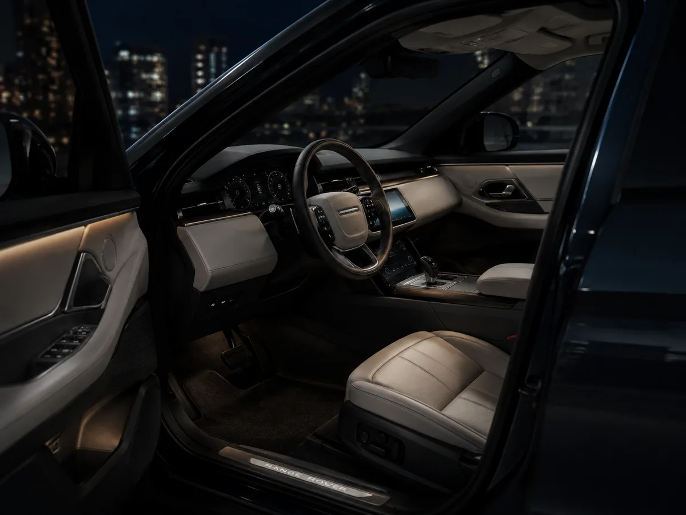
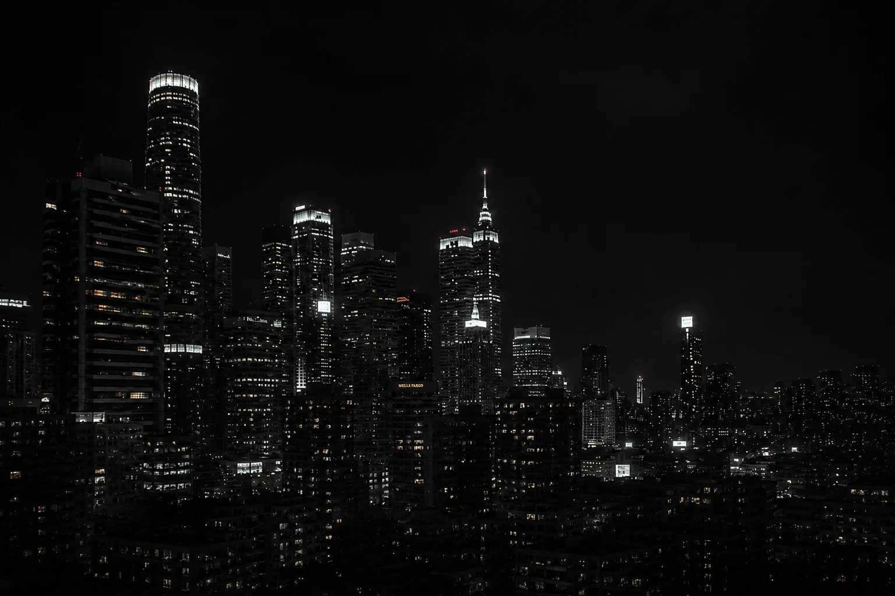

Cada unidad revisada, con historial verificado.
Elegidos, no conseguidos.
Revisado. Verificado. Entregado.
La proporción manda. El resto es decoración.
DiseñoUna sola línea del faro al portón.
PerfilEl músculo sobre las ruedas, que no se dibuja: se esculpe.
VolumenSe estaciona y todavía se lo mira de lejos.
Presencia
